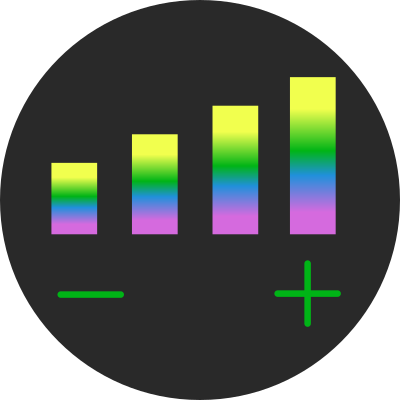

Radio Detroit music слушать онлайн бесплатно
Сейчас:
Следует:
Слушать новинки радио Radio Detroit бесплатно
Отдохнуть и расслабиться, погрузиться в мир гармонии и наслаждений – все это вам под силу вместе с каналом «Radio Detroit». Мелодичная, приятная мелодика, завораживающие вокализы и напевы, сочетание этих двух ингредиентов создает идеальную атмосферу для возникновения приятных мыслей. Станьте первооткрывателем, любите необычное, насладитесь прекрасным и удивительным.
История эфира